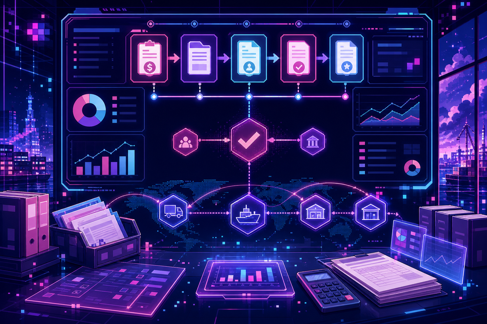
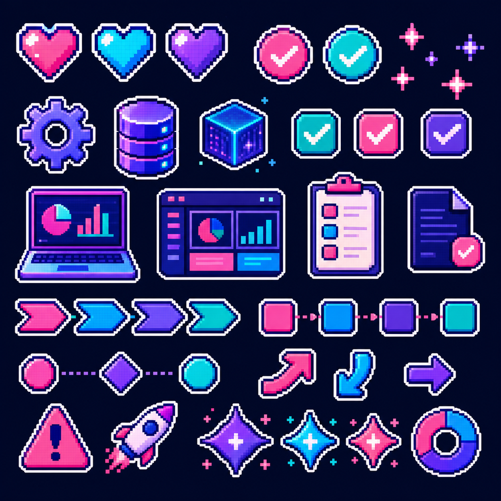

需求调研
访谈关键用户，整理业务痛点、单据流和权限边界，形成可配置的需求清单。
NEON IMPLEMENTATION PORTFOLIO
把业务流程落进系统，把上线风险拆成清单。
我关注从需求访谈、流程蓝图、系统配置到 UAT、培训和上线支持的完整闭环。 这里是一个可替换模板，用来展示你的 ERP 实施方法、模块经验和交付能力。
CORE MODULES
用模板占位，后续可以替换成你的真实模块经验、行业经验和工具栈。
访谈关键用户，整理业务痛点、单据流和权限边界，形成可配置的需求清单。
把采购、销售、库存、生产、财务等流程拆成节点、角色、输入与输出。
维护基础资料、审批流、权限、编码规则和业务参数，保持配置可追溯。
组织 SIT/UAT，跟踪缺陷、复测结果和验收口径，降低上线前的不确定性。
输出操作手册、培训课件和常见问题清单，帮助用户形成稳定操作习惯。
上线后按优先级记录、分派、复盘问题，沉淀为后续优化和二期需求。
PROJECT CASES
以下是可替换结构，不包含虚构公司、金额或真实业绩。
制造 / 库存 / 生产
项目背景：填写行业、规模、核心痛点，例如库存账实不一致、生产进度不透明。

财务 / 供应链 / 审批
项目背景：填写单据流、审批流、报表口径或跨部门协作问题。
培训 / 上线 / 支持
项目背景：填写上线范围、用户角色、培训对象和切换策略。
IMPLEMENTATION LOOP
把项目从“大家都觉得差不多”推进到“每个节点都有负责人和验收标准”。

需求清单、流程图、配置表、主数据模板、测试用例、UAT 问题表、培训手册、 上线检查表、周报与会议纪要。
CAREER LOG
先用模板节点占位，等你提供真实经历后我可以再帮你改成正式求职版。
填写你熟悉的行业流程、ERP 模块、业务角色和常见单据。
填写你参与过的项目范围、配置内容、测试支持和交付文档。
填写你如何处理用户问题、复盘上线风险、推动流程优化。
READY TO CONNECT
把这里替换成邮箱、电话、微信、GitHub、飞书文档或简历 PDF 链接。